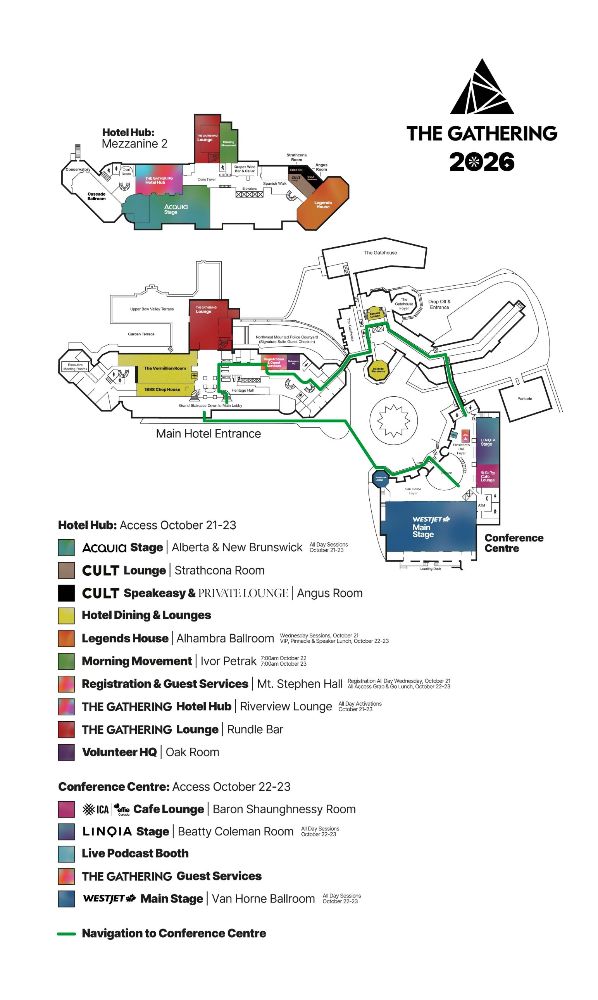
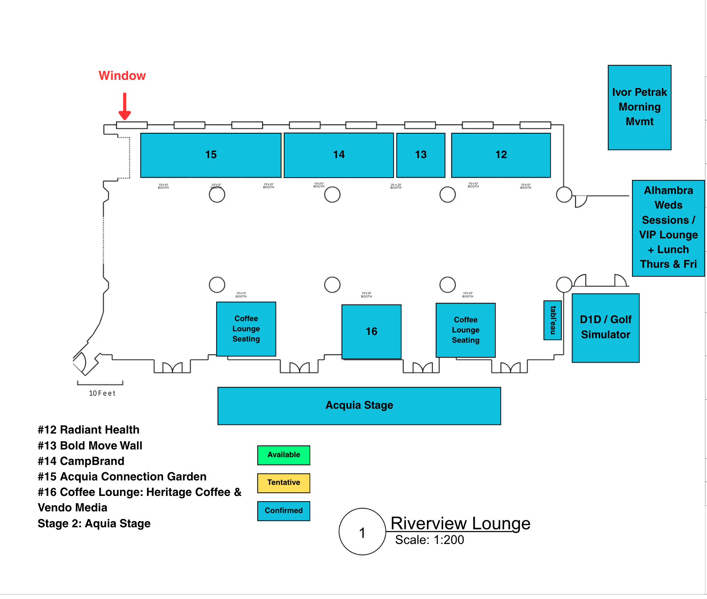
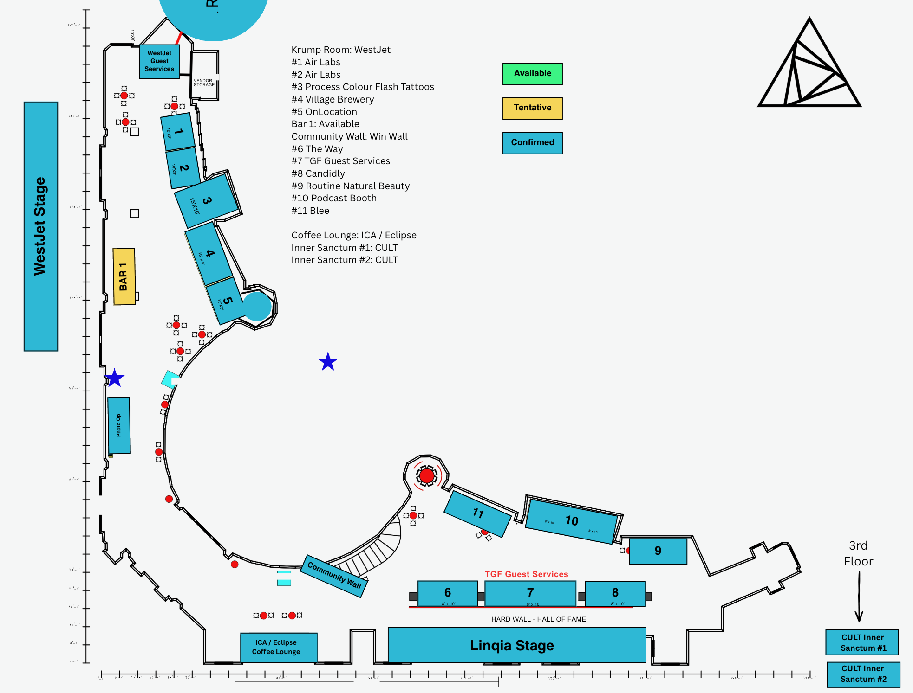

Crew and shifts
Three shooters cover Wed Oct 21 to Fri Oct 23, each on a 10-hour shift. Aaron and Bence run 8:30 AM to 6:30 PM, so someone is on the hotel side from 8:30. Oliver runs 12 PM to 10 PM and works the evening events one by one. Two editors, Shane and Zach, cut sessions and daily recaps behind them (see Edit team).
Visual version: Crew schedule, hour-by-hour blocks for each shooter by day.
On-site checklists: Shot lists, one tickable list per shooter per day, grouped by location.
| Shooter | Shift | Daytime home base | Evening role |
|---|---|---|---|
| Aaron | 8:30 AM to 6:30 PM | Hotel side. Acquia Stage (Alberta / New Brunswick Room) and the Riverview Lounge booths beside it. Wed also Alhambra until 12:15. CULT lounges and hotel lunches. | Opening Party setup Wed, Creator Party Thu, red carpet Fri |
| Bence | 8:30 AM to 6:30 PM (Fri to 10 PM) | Conference Centre. WestJet Main Stage (Van Horne Ballroom), booths #1 to #5 in the Van Horne foyer, CULT Inner Sanctums (3rd floor). Wed: registration, arrivals, Riverview Lounge. | Legends Dinner to 6:30 Wed, Good Folk setup Thu, gala stage side Fri on overtime |
| Oliver | 12 PM to 10 PM | Wed: Alhambra from 12:15. Thu and Fri: Linqia Stage (Beatty Coleman Room) from 12:15, plus booths #6 to #11 and the ICA / Eclipse Coffee Lounge beside it. | Runs the evening schedule in order, wraps at 10 PM |
Bence overtime: 3.5 hours, Friday only. Bence works 10-hour days (8:30 AM to 6:30 PM) on Wednesday and Thursday like the other shooters. Friday he stays for the gala on overtime, splitting stage and room with Oliver. Both wrap at 10 PM.
| Day | Bence shift | Overtime | Evening coverage |
|---|---|---|---|
| Wed Oct 21 | 8:30 AM to 6:30 PM | 0 | Legends Dinner until 6:30 |
| Thu Oct 22 | 8:30 AM to 6:30 PM | 0 | Good Folk setup until 6:30 |
| Fri Oct 23 | 8:30 AM to 10:00 PM | 3.5 hr | Cocktail Hour, gala stage side |
| Total | 3.5 hr |
Stage layout (confirmed). WestJet and Linqia are the two side-by-side stages. Acquia is the hotel-side stage.
Pre-doors (empty stages). Bence shoots them, one side per day. Thursday 8:30: Acquia on the hotel side. Friday 8:30: WestJet and Linqia in the Conference Centre. Wednesday's Acquia and Alhambra empties stay with Aaron, since Bence is on registration then.
Session recording. Pro Show records every session in full, with cameras and board audio. Aaron, Bence and Oliver capture b-roll only: speaker hero clips, reactions, stage environment, activations and events. No camera setup.
15-minute break routine (all shooters).
- Swap your own cards and batteries.
- Room wide and VIP seating while it resets.
- Nearest activations on your side, logos whole and readable.
- Back in the room for the next walk-on.
Edit team
Two editors work behind the shoot. Shane cuts full session recordings one day behind the stages. Zach cuts each day's recap overnight, due 7:30 AM.
| Editor | Job | Days | Shift | Works from |
|---|---|---|---|---|
| Shane | Session edits | Thu, Fri, Sat | 9 AM to 7 PM | The previous day's Pro Show session recordings on SSD |
| Zach | Daily recap reels | Wed, Thu, Fri nights | 9:30 PM to 7:30 AM | That day's cards from all three shooters |
Shane's day. Thu cuts Wed sessions (Acquia, Alhambra). Fri cuts Thu sessions (WestJet, Linqia, Acquia, Inner Sanctums). Sat cuts Fri sessions (WestJet, Linqia, Acquia).
- One file per session, ★ Tier 1 speakers first.
- File name: Day - Stage - Speaker(s) - Session title.
- TGF sonic intro and outro on every session.
- Uploaded to 2026 SESSIONS, in the folder for the stage it ran on, with what's left logged.
Zach's night.
- One recap per day (horizontal & vertical): that day's sessions, activations and night events.
- Named by day, for example 202610XX_TGF2026_RECAP_1.
- Music, colour and titles done, no cropped partner logos.
- Uploaded to DAILY RECAP VIDEOS by 7:30 AM.
Card drops (to the edit station).
| Day | Time | From | Cards |
|---|---|---|---|
| Wed | 6:30 PM | Aaron | Acquia + Alhambra b-roll, CULT lounges, Opening Party setup |
| Wed | 7:00 PM | Bence | Registration, arrivals, Riverview Lounge, Legends Dinner |
| Wed | 10:00 PM | Oliver | Alhambra, Sudden Sally, Lux, Opening Party |
| Thu | 5:45 PM | Bence | WestJet + Linqia b-roll, Inner Sanctums, Conference Centre booths |
| Thu | 6:30 PM | Aaron | Acquia b-roll, Riverview Lounge, Creator Party |
| Thu | 7:00 PM | Bence | Good Folk setup |
| Thu | 10:00 PM | Oliver | Linqia, Creator Party, Igloo, Disney Salon, Fuck Up Nights, Jamboree |
| Fri | 6:30 PM | Aaron | Acquia b-roll, hotel side, plus Bence's day cards |
| Fri | 10:00 PM | Oliver + Bence | Gala room side and stage side |
Gaps to confirm with Sam
The shot list leaves out session times and several venues. These items decide whether the plan holds. Times below are built on the shot list as written.
- Session run of show per stage. Which day and stage each ★ Tier 1 speaker is on. Mark each one against the shooter who owns that stage.
- Doors time each morning. Empty stages, VIP seating and empty registration must be shot before doors. Shooters now start at 8:30 AM. If doors open before 9 AM, that start misses them.
- ✓ Thu welcome video. Which stage and what time the "WELCOME TO THE GATHERING" moment plays. The plan assumes WestJet, first session Thu (Bence).
- Morning wellness gap. Thu 7 to 8 AM Morning Movement and Fri 7 to 8 AM Meditation are ★ scenic and fall before any shift. Fix: start Aaron at 7 AM on Thu and Fri (ends 5 PM). Sunrise is near 8:10 AM, so dawn wides land inside that hour. Oliver then takes the 5 PM block alone. The venue map lists Morning Movement with Ivor Petrak at 7 AM on both Thu and Fri, which differs from the shot list.
- ✓ Legends Dinner timing. When the dinner ends. Bence wraps at 6:30 PM, before sunset and poet Arielle. Decide whether that part needs coverage.
- Off-site venue addresses. Sudden Sally, Good Folk, BSSP Igloo and Dusty Boot Saloon. The Supper Club list the shot list points to isn't in the doc. Travel times in this plan are 10 to 20 minute placeholders.
- Disney Salon Dinner. Section 4 says 8 to 9 PM, Section 8 says 7:30 to 9 PM. Venue is listed as both Grapes and Vines. Plan assumes 7:30 PM at Grapes. The venue map shows Grapes Wine Bar & Cellar on Mezzanine 2.
- Gala run of show. Award order for the 5 BHoF brands and the One Club / Apple moment. Also the room flip time in Van Horne, so the empty gala room can be shot.
- ✓ Locked-off cameras and audio. Three session cameras plus a board feed from AV on each stage. - Pro Show Does this
- Transport. A vehicle or shuttle seat for Oliver on all downtown stops, and for Bence to Good Folk on Thu. Gondola access for Bence at Sky Bistro.
- ✓ Late finishes. The Opening Party, Jamboree and After Party run late. Oliver wraps at 10 PM, so the Opening Party and Jamboree have no coverage after that. The After Party has no coverage.
- ✓ Friday option. The gala is the densest ★ block of the week with one shooter on it. Covered: Bence works the gala stage on overtime, 6:30 to 10 PM.
- Edit station. Where Shane and Zach work, and who holds the session SSDs.
- Session edit volume. Thu and Fri each run three full stages. That is likely more than Shane can cut in one day. Saturday catches up, but the full set will run past Saturday. Confirm the delivery date with Sam.
- Zach's start time. The plan starts him at 9:30 PM so his 10 hours end at the 7:30 AM deadline. Night cards land between 9 PM and midnight.
- Detailed activation map. Received for the Riverview Lounge and the Conference Centre. Still not placed: Behind the Screen Lounge, Kuma, Big Chief, Pattison water stations, COI furniture.
- Process Colour. The tattoo booth is now #3 in the Conference Centre, not the hotel. Confirm the Wed sign-up still happens at Rundle Bar.
- CULT Inner Sanctums. The map puts them on the 3rd floor of the Conference Centre, which opens Thursday. The plan drops Wednesday Inner Sanctums.
- Bar 1. Listed as available in the Conference Centre. Confirm whether a sponsor takes it.
- Late events. Oliver wraps at 10 PM. Confirm nobody needs the Opening Party or Jamboree after 10. Bence now wraps at 6:30 PM Wed and Thu and 10 PM Fri, so the Legends Dinner after 6:30, the Good Folk dinner, Fuck Up Nights after 9:15 and the After Party have no coverage.
Wednesday Oct 21: arrivals, registration, night one
Two stages run Wed (Acquia and Alhambra), both on the hotel side. Bence owns registration, the Riverview Lounge and the Legends Dinner until 6:30 PM. Oliver takes Alhambra at 12:15, then runs Sudden Sally, Lux and the Opening Party until 10 PM.
Aaron (8:30 AM to 6:30 PM)
| Time | Where | Capture |
|---|---|---|
| 8:30 to 9:15 | Acquia + Alhambra | ★ Both stages empty before attendees. VIP seating, signage. |
| 9:15 to 12:00 | Acquia + Alhambra | Float both stages. Tight angles and hero clips, ★ speakers first. Breaks: CULT Lounge (Strathcona Room) and CULT Speakeasy (Angus Room). |
| 12:00 to 4:30 | Acquia Stage | Oliver takes Alhambra at 12:15. Sessions, hero clips, reactions. 30-min meal in a session gap. Breaks: CULT lounges on Mezzanine 2. |
| 4:30 to 5:45 | Rundle Bar + Terrace | Opening Party EMPTY before doors. Kuma pop-up and CULT sidecar setup, Process Colour tattoo sign-up. |
| 5:45 to 6:30 | Mt. Stephen Hall + video booth | Late-day activations FULL, video booth in use. |
Bence (8:30 AM to 6:30 PM)
| Time | Where | Capture |
|---|---|---|
| 8:30 to 9:00 | Mt. Stephen Hall | ★ Registration EMPTY wide with signage and sponsor logos. Mark the tripod spot for the FULL shot. |
| 9:00 to 11:00 | Entrance + lobby | Arrivals, luggage, hugs, the flags. Range Rovers with speakers and VIPs. Linqia key cards and Gold Floor check-in for the VIP / Pinnacle reel. |
| 11:00 to 12:00 | Mt. Stephen Hall | ★ Registration FULL from the marked spot at peak. Video booth lineups plus overhead. Candid intros, coffees, selfies. Pheedloop app in use. |
| 12:00 to 12:30 | Break | Meal. |
| 12:30 to 4:15 | Riverview Lounge + main floor | Riverview Lounge booths: #12 Radiant Health, #13 Bold Move Wall, #14 CampBrand, #15 Acquia Connection Garden, #16 Heritage Coffee & Vendo Media, D1D golf sim. Main floor: Rundle Bar, Mt. Stephen Hall. |
| 4:15 to 4:45 | Prep | Batteries, cards, gimbal for the gondola. |
| 4:45 to 5:00 | Fairmont lobby | Legends meet-up, VIPs heading out. Depart 5:00 PM sharp. |
| 5:00 to 6:30 | Sky Bistro | ★ Legends Dinner. Gondola ride and cabin view. Summit golden hour. Table setup before seating. Guests arriving, branded cocktails, glassware with the view. Conversation cards. ★ Linqia branding in frame. Wrap at 6:30. |
Oliver (12:00 PM to 10:00 PM)
| Time | Where | Capture |
|---|---|---|
| 12:00 to 12:15 | Hotel side | Check in with Aaron. Get the hero clip list. |
| 12:15 to 4:30 | Alhambra Ballroom | Sessions, tight angle, hero clips, reactions. Breaks: Legends House room wide. |
| 4:30 to 5:00 | Break | Meal. |
| 5:00 to 5:30 | Fairmont exterior | Golden light exteriors for the aftermovie. Full batteries and cards for the night. |
Oliver's evening run
| Time | Stop | On site | Get this, in order |
|---|---|---|---|
| 5:30 to 5:45 | Travel to Sudden Sally | 15 min | |
| 5:45 to 6:15 | Sudden Sally Supper Club | 30 min | Set table before guests, candles, florals. Then guests sitting, host welcome, wine pours, a toast. |
| 6:15 to 6:35 | Travel to Lux Cinema | 20 min | |
| 6:35 to 7:40 | Disney Film Screening @ Lux | 65 min | 6:35 exterior, Disney signage, arrivals. 7:00 ★ speakers introducing the evening, wide and tight. 7:15 full theatre, popcorn, blankets, faces lit, reactions. |
| 7:40 to 7:55 | Travel to the Fairmont | 15 min | |
| 7:55 to 10:00 | ★ Opening Party @ Rundle Bar + Terrace | 2 hr | 7:55 arrival energy, signage lit, branded cocktails and food. 8:15 Terrace: Kuma gear, CULT sidecar entrance and inside, tattoo sign-up. 8:45 networking, photobooths, giveaways. 9:15 dance floor: DJ, DJ drop, slow crowd pan, cheers. 9:45 last clips, wrap at 10. |
Thursday Oct 22: three stages, six night events
All three stages run Thu and the Conference Centre opens. Aaron starts on the hotel side at 8:30 while Bence shoots the Acquia pre-doors. Oliver takes Linqia at 12:15 and runs five night stops until 10 PM, splitting Fuck Up Nights and the Jamboree. Bence wraps at 6:30 after the Good Folk setup.
Aaron (8:30 AM to 6:30 PM)
| Time | Where | Capture |
|---|---|---|
| 8:30 to 9:30 | Riverview Lounge, Mezzanine 2 | Booths before guests: #12 Radiant Health, #13 Bold Move Wall, #14 CampBrand, #15 Acquia Connection Garden, #16 Heritage Coffee & Vendo Media, D1D golf sim. CULT Lounge too. Bence has the Acquia pre-doors. |
| 9:30 to 12:00 | Acquia Stage | Sessions, hero clips, reactions. Breaks: Riverview Lounge, right beside the stage. |
| 12:00 to 1:00 | Mt. Stephen Hall + Alhambra | All Access Lunch: grab-and-go, signage, socializing. VIP, Pinnacle & Speaker Lunch in Alhambra: buffet, signage, toasts. |
| 1:00 to 5:00 | Acquia Stage | Sessions. 30-min meal in a session gap. Breaks: Riverview Lounge booths, CULT Lounge (Strathcona), CULT Speakeasy (Angus Room), Rundle Bar. |
| 5:00 to 5:30 | Fairmont Terrace | Creator Party buildout before guests. Disney branding with the mountain backdrop. |
| 5:30 to 6:30 | ★ Creator Party, Terrace | Terrace wide with branding, golden light before sunset (near 6:40 PM), decor, drinks and food. |
Bence (8:30 AM to 6:30 PM)
| Time | Where | Capture |
|---|---|---|
| 8:30 to 9:15 | Acquia Stage (hotel side) | ★ Acquia Stage empty and VIP seating before attendees. |
| 9:15 to 9:30 | Walk | To the Conference Centre. |
| 9:30 to 10:00 | WestJet Main Stage | ★ Tail of the welcome video as the screen cuts to "WELCOME TO THE GATHERING". Opening walk-on. |
| 10:00 to 12:00 | WestJet, Linqia, CULT Inner Sanctums | Float, WestJet first. VIP seating FULL and WestJet airplane snacks. CULT Inner Sanctums #1 and #2 (3rd floor): candids, Q&A. Behind the Screen Lounge empty and full. Booths #6 to #11 before Oliver arrives. |
| 12:00 to 1:00 | Van Horne foyer | Lunch peak at booths #1 to #5: Air Labs, Process Colour Flash Tattoos, Village Brewery, OnLocation. Win Wall, Photo Op, WestJet Guest Services. 30-min meal. |
| 1:00 to 5:00 | WestJet Main Stage | Oliver has Linqia. Hero clips, panel L/R, speaker POV, walk-ons. Breaks: Krump Room (WestJet), Process Colour tattoos, booths #1 to #5. |
| 5:00 to 5:45 | Conference Centre | Last session or activations FULL. |
| 5:45 to 6:00 | Travel | To Good Folk. |
| 6:00 to 6:30 | Good Folk Supper Club | Set table before 6:30 guests, candlelight, florals. First guests if early. Wrap at 6:30. |
Oliver (12:00 PM to 10:00 PM)
| Time | Where | Capture |
|---|---|---|
| 12:00 to 12:15 | Conference Centre | Check in with Bence. Get the hero clip list. |
| 12:15 to 4:45 | Linqia Stage | Sessions, hero clips, every panelist covered. Breaks: booths #6 to #11 beside the stage (The Way, TGF Guest Services, Candidly, Routine Natural Beauty, Podcast Booth, Blee), ICA / Eclipse Coffee Lounge, Hall of Fame wall. |
| 4:45 to 5:15 | Break | Meal. Full batteries and cards for the night. |
Oliver's evening run
| Time | Stop | On site | Get this, in order |
|---|---|---|---|
| 5:15 to 6:20 | ★ Creator Party, Terrace | 65 min | Second angle with Aaron. Aaron holds wides, branding and light. You take creators with phones out, activations, posing. Grab it fast, lots of other media on site. |
| 6:20 to 6:35 | Travel to BSSP Igloo | 15 min | |
| 6:35 to 7:05 | BSSP Igloo Private Dinner | 30 min | Exterior only. Glowing igloo at blue hour (6:45 to 7:10). Wide, mid, details, one slow push. One doorway clip of seated guests if allowed. Enough for a 15 to 30 second reel. |
| 7:05 to 7:20 | Travel to Grapes (Mezzanine 2) | 15 min | |
| 7:20 to 8:15 | Disney Salon Dinner @ Grapes | 55 min | 7:20 buildout and styling before guests. 7:30 full table, Disney welcome remarks, eating, toasts. |
| 8:15 to 8:30 | Travel to Dusty Boot Saloon | 15 min | |
| 8:30 to 9:15 | ★ Fuck Up Nights @ Dusty Boot Saloon | 45 min | Saloon details: signage, bar, neon. Speakers mid-story, wide and tight. Crowd laughing, cheering, cringing. Get at least two speakers. |
| 9:15 to 9:25 | Travel to Melissa's Missteak | 10 min | |
| 9:25 to 10:00 | ★ Jamboree @ Melissa's Missteak | 35 min | Exterior signage. Live music wide and tight. Dancing, singing along. Crowd pan, wrap at 10. |
Friday Oct 23: last sessions and the gala
Friday nights stay on site, so nobody travels. Aaron covers the hotel side from 8:30 while Bence shoots the WestJet and Linqia pre-doors. From 7 PM Oliver takes the gala room and Bence the stage on overtime. Both wrap at 10 PM, so the After Party has no coverage.
Aaron (8:30 AM to 6:30 PM)
| Time | Where | Capture |
|---|---|---|
| 8:30 to 9:30 | Riverview Lounge | Booths before guests: #12 to #16 and D1D. CULT Lounge too. Bence shot the Acquia empties on Thursday. |
| 9:30 to 12:00 | Acquia Stage | Sessions, hero clips, reactions. Breaks: Riverview Lounge. |
| 12:00 to 1:00 | Mt. Stephen Hall + Alhambra | Friday lunches, 20 minutes each. Then the Riverview Lounge. |
| 1:00 to 4:30 | Acquia Stage | Sessions. 30-min meal in a session gap. |
| 4:30 to 5:30 | Hotel side | Partner sweep. Fill any priority partner still missing a clean, logo-readable clip (see the last section). |
| 5:30 to 6:30 | Red carpet + Cocktail Hour | Red carpet arrivals, outfits, groups. ICA / Effies branding. |
Bence (8:30 AM to 6:30 PM, gala overtime to 10:00 PM)
| Time | Where | Capture |
|---|---|---|
| 8:30 to 9:15 | WestJet + Linqia | ★ Both stages empty, VIP seating first with the WestJet airplane snacks set out. Conference Centre booths #1 to #11 before guests. |
| 9:15 to 12:15 | WestJet, Linqia, Inner Sanctums | Float, ★ speakers first. CULT Inner Sanctums (3rd floor). Booths #6 to #11 before Oliver arrives. |
| 12:15 to 1:00 | Van Horne foyer | Lunch peak at booths #1 to #5, Win Wall, Photo Op. 30-min meal. |
| 1:00 to 4:30 | WestJet Main Stage | Last sessions: hero clips, reactions, stage environment. |
| 4:30 to 5:30 | Mainstage (Van Horne) | ★ Gala room EMPTY with full dining setup before doors. Wide, table details, stage screens. Timing depends on the room flip. |
| 5:30 to 6:30 | Cocktail Hour | Branded bar, drinks, cheers, small groups, connection cards. |
| 6:30 to 7:00 (OT) | Cocktail Hour | 6:45 room filling. Move to the stage side. |
| 7:00 to 10:00 (OT) | ★ Gala, stage side | For each BHoF brand (Home Depot, ESPN / Amex, Disney, Budweiser, Chick-fil-A): ★ hero clip on stage with the logo on screen, and ★ trophy hand-off close-up. ★ One Club presentation with Apple on screen. Presenters. Oliver has the room. Wrap at 10. Friday overtime: 3.5 hrs. |
Oliver (12:00 PM to 10:00 PM)
| Time | Where | Capture |
|---|---|---|
| 12:00 to 12:15 | Conference Centre | Check in with Bence. |
| 12:15 to 4:15 | Linqia Stage | Last sessions, hero clips, every panelist covered. Breaks: booths #6 to #11, ICA / Eclipse Coffee Lounge, Hall of Fame wall. |
| 4:15 to 4:45 | Break | Meal. |
| 4:45 to 5:30 | Mainstage | Full batteries and cards. Scout the trophy hand-off spot with AV. Get the award order from Sam. |
Oliver's gala night
| Time | Stop | On site | Get this, in order |
|---|---|---|---|
| 5:30 to 6:30 | Backstage + trophies | 60 min | Bence and Aaron have the cocktail floor. Trophy details on the table, presenters prepping, run-of-show check with Sam. |
| 6:30 to 7:00 | Mainstage | 30 min | Lock your room position. Room filling, wide from the back. |
| 7:00 to 10:00 | ★ Effies // Brand Hall of Fame Gala, room side | 3 hr | Bence has the stage. You take the room. Room FULL wide from the back at peak. Past inductees on screen in a wide. Applause, standing ovations, tables celebrating. Dinner, socializing, ICA / Effies branding between awards. Wrap at 10. |
Venue and booth maps
The venue map shows which rooms sit on the hotel side and which sit in the Conference Centre. The two booth maps give the numbers used in the shot lists and the partner table below.
Venue overview
Hotel Hub (Mezzanine 2 and main floor) on the left, Conference Centre on the right. The green line is the walk between them.

Riverview Lounge (Hotel Hub, beside Acquia)
Booths #12 to #16, D1D golf simulator and tabl'eau water. Aaron's area, Bence on Wednesday.

Conference Centre (Van Horne foyer to Linqia)
Booths #1 to #5 by WestJet are Bence's. Booths #6 to #11, the ICA / Eclipse Coffee Lounge and the Hall of Fame wall by Linqia are Oliver's. The CULT Inner Sanctums are on the 3rd floor.

Partner and activation ownership
Each shooter owns the activations on their side and fills them during breaks. Booth numbers follow the Riverview Lounge and Conference Centre maps. Priority partners need enough clips for a standalone b-roll reel. Every partner needs at least one clean, logo-readable clip by the end of each day.
| Partner | Activation / location | Owner | Priority reel |
|---|---|---|---|
| WestJet | Main Stage (Van Horne Ballroom), Krump Room, WestJet Guest Services, VIP airplane snacks | Bence | Yes |
| Linqia | Linqia Stage (Beatty Coleman Room), Gold Floor key cards, Legends Dinner | Oliver on stage, Bence before 12:15 and Wed | Yes |
| Acquia | Acquia Stage, #15 Acquia Connection Garden (Riverview Lounge) | Aaron | Yes |
| Disney | Screening, Creator Party, Salon Dinner, gala | Oliver (Aaron at Creator Party, Bence at gala) | Yes |
| ICA / Effies | Panels, ICA / Eclipse Coffee Lounge, gala | Oliver by day, Oliver and Bence at gala | Yes |
| CULT | CULT Lounge (Strathcona Room), Speakeasy & Private Lounge (Angus Room), Inner Sanctums #1 and #2 (3rd floor, Conference Centre), Rundle Bar sidecar | Aaron (lounges), Bence (Inner Sanctums), Oliver (Opening Party) | Yes |
| CampBrand | #14, Riverview Lounge (new this year) | Aaron (Bence on Wed) | Yes |
| Process Colour | #3 Flash Tattoos, Van Horne foyer. Wed sign-up at Rundle Bar | Bence (Aaron and Oliver for the Wed sign-up) | Yes |
| OnLocation (HedKandi) | #5, Van Horne foyer | Bence | Yes |
| Pheedloop | Attendee app in use | Anyone, once a day | Yes |
| Banff Lodging | No activation listed. Confirm with Sam | TBD | Yes |
| Radiant Health | #12, Riverview Lounge | Aaron (Bence on Wed) | |
| Bold Move Wall | #13, Riverview Lounge | Aaron (Bence on Wed) | |
| Heritage Coffee + Vendo Media | #16 Coffee Lounge, Riverview Lounge | Aaron (Bence on Wed) | |
| D1D | Golf simulator, Riverview Lounge | Aaron (Bence on Wed) | |
| Air Labs | #1 and #2, Van Horne foyer | Bence | |
| Village Brewery | #4, Van Horne foyer | Bence | |
| Win Wall + Photo Op | Community wall and photo op, Van Horne foyer | Bence | |
| The Way, Candidly, Routine Natural Beauty, Blee | #6, #8, #9, #11, by Linqia | Oliver | |
| Podcast Booth (DIRTT) | #10, by Linqia | Oliver | |
| TGF Guest Services | #7, by Linqia | Oliver | |
| Hall of Fame wall | Hard wall behind booths #6 to #8 | Oliver | |
| COI | Coffee lounge furniture | Oliver | |
| tabl'eau, Pattison Outdoor | Water stations (tabl'eau in the Riverview Lounge) | Shooter on that side | |
| Big Chief Meat Snacks | Pop-ups, spots TBC | Shooter on that side | |
| Kuma Outdoor Gear | Opening Party pop-up outside Rundle Bar | Aaron setup, Oliver in use | |
| Range Rover | Shuttle cars at the Fairmont entrance | Bence (Wed arrivals) |
End of each day (all shooters): hero clip of every speaker on your stage, empty-vs-full pairs for your spaces, one clean logo clip per partner you own. Cards go to the edit station at the card-drop times in Edit team. Zach's recap is due 7:30 AM.